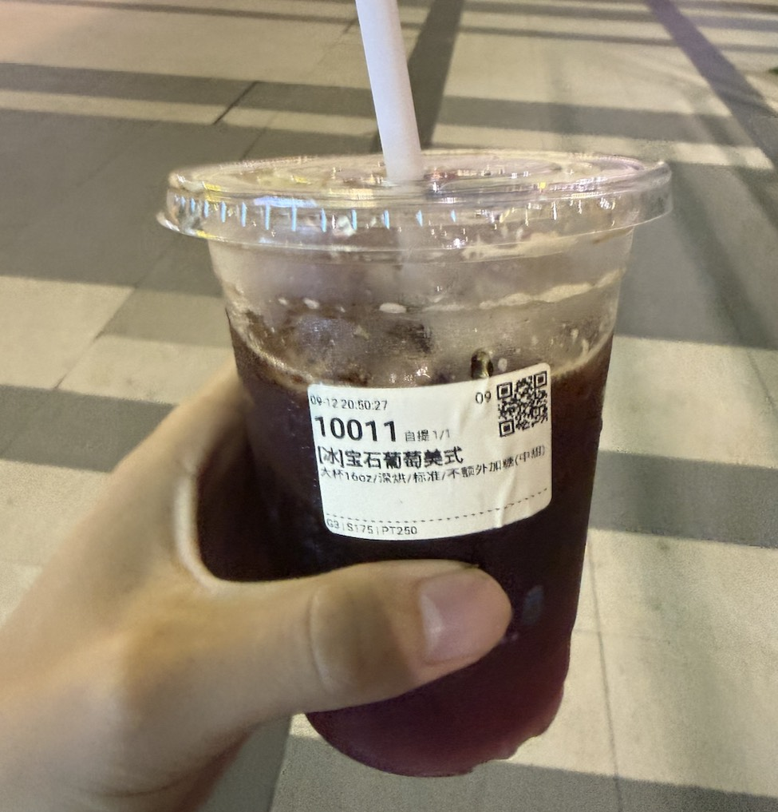

2025年4月24日，星期四，今天我在天门市，气温是20°C，多云
📝[每日速记]
———————————————————————
我算是一个挺喜欢自拍的人，
不是为了发圈炫耀，
更多时候，只是想给自己留下点什么，
一点痕迹，一点可被翻看的瞬间。
2017年之前的日子，如今已经模糊得厉害，
那时候没手机，也没有记录生活的习惯，
记忆像一张褪色的底片，
模糊到只剩一些情绪，没有细节。

真正开始“留住自己”，
是在2017年以后。
照片、笔记、相册、截图……
一张张小碎片拼起了一个更清晰的我，
也拼起了我的时间线。
无聊的时候，我常翻翻这些旧照片，
想起当时的情绪、当时的选择，
甚至会忍不住设想：
“如果那时候做了另一个决定，
现在的我，会不会不一样？”
但想归想，我也渐渐懂了，
每一个“当时”都只能通往此刻的“我”，
哪怕有遗憾，也都成了我自己的风景。
不过，心里还是有个小小的愿望藏着——
希望未来的手机相册，
不再只是我的脸、我的街景、我的生活碎片。
我希望，未来的某一天，
我的照片里会出现另一个人。
不是偶尔入镜，不是路人背景，
而是那种真真实实陪我一起生活、
一起老去的“我们”。
希望我们出现在彼此的镜头里，
一张、两张、三张……
不为发，也不为秀，
只是某天翻开时，
会突然一怔：
“啊，那天的阳光真好，
那时候的我们，好安静，好近。”
那一刻的心悸，
不来自于孤独的回望，
而是因为照片里有你、
而你还在，
那就是我想要的未来。